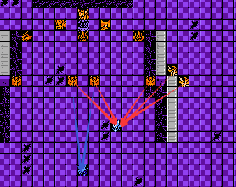
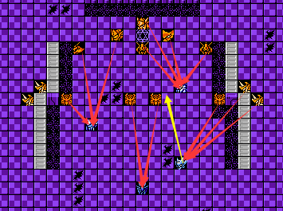
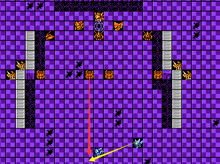

NPC即我方不可控单位，在游戏中一般具有特殊的地位，其行动方式，即智商与敌方智商一致。对于NPC，我们可以将其分为四类，击落即失败的非修理单位，击落即失败的非修理单位，击落不失败的非修理单位，击落不失败的修理单位。
1.对于击落不失败的非修理单位，例如原版第二关的盖塔Q和第二十五关劝降的比基纳・基纳，这类NPC在游戏中的地位一般是无关紧要的，因为在其存在周期内只是承受一些伤害或者输出少量的伤害，但是不可否问的是此类NPC可以用来吸引仇恨，承受关键性的伤害以保证我方可控单位的生存。在某些改版，如果此类NPC具有自我恢复的功能，此时我们也需要进行关注，例如高达UC第二十九关和第三十一关的NPC，伤害输入与输出的平衡，是需要我们掌控的，但是这取决于NPC的智商，所以我们可以间接得对敌方单位进行控位以达到对NPC的控制，形成对我方有利的局势。如下图所示：



对于图一敌方单位和NPC的智商中的基础判定方式中的第一优先级均为攻击优先的情况，假设NPC黑百合最多承受三下攻击，那么我们可以选择仇恨较高的我方可控单位吸收一部分伤害，如蓝色箭头所示，从而达到保护NPC的目的；对于图二而言，如果NPC为移动优先，并且在本回合行动时达到黄色箭头所示位置攻击巴尔西昂，我们可以选择提前将巴尔西昂击落，如果无法做到，我们就需移动我方单位，吸收一部分伤害以保证NPC的生存（如红色箭头所示），此时的情况是最难控制的，需要玩家根据实际情况反复调整；对于图三而言，我们可以利用敌方移动优先的原则，放置我方单位对其进行间接控位，让巴尔西昂移动至红色箭头所示位置，再让NPC攻击较为弱势的巴尔西昂。
2.对于击落即失败的非修理单位（也包括击落即失去隐藏，例如蓝月2第二关的盖塔Q），就是需要保护的单位，这类NPC对于玩家来说是非常头疼的，因为不能受到任何方式的回复，生存就变得极为困难。例如BOBO8第九关需要保护的太勒，是需要被保护的而且是行动受限制的单位。在一定程度上来说，行动受限制反而更容易保护，针对敌方的近战单位，我们只需将其围住便可确保其不受到伤害。对于敌方的远程单位，只要不让其移动到可以攻击到NPC的射程之内的范围即可，此时我们有两种处理方式，一个是对于优先攻击的敌方单位，我们只需要在其射程范围内放置我方单位即可，保证其站在原位就不会对NPC造成威胁。第二个是对于优先移动的敌方单位，我们要根据其行动动向来作出选择，如果在攻击我方单位时是选择原位远程输出，那么处理方式和优先攻击的敌方单位一致，对于会移动过来近战的敌方单位来说，我们就必须对其进行快速处理，最简单的方式就是将其快速击落。总的来说，对于敌方近战单位，我们只需要将NPC围住，以守为攻即可，对于远程单位，我们就需要主动出击，快速歼灭。
3.对于击落即失败的修理单位，可能相对于击落即失败的非修理单位更好保护一些，或者说我们反而可以利用其修理优势获得更有利的战场局势。但是我们需要先了解其行动方式。例如原版第十一关需要保护的米迪亚。与敌方修理单位的智商一致，当自身的当前HP大于最大HP的一半时，如果周围有损血的己方单位，那么就会优先进行修理（依照编号大小的顺序进行），如果没有，则会修理自己。当自身的当前HP小于最大HP的一半时，如果周围存在敌方单位，那么就会优先攻击，如果无，那么就会先修理我方损血单位，再修理自己。明白了行动原则，那么我们就可以采取合适的方式对其进行保护。如果我们只是想让其作为一个辅助的修理单位，那么我们可以将其围住，防止敌方近战单位的进攻，然后主动出击牵制敌方远程单位，然后我们可以将损血的我方单位放置其周围进行修理，这是最为理想的情况，但是对于多数改版而言可能不是这样的，可能会遭受多方面的进攻。如果此NPC损血，我们可以选择撤离贴身于其周围的我方单位，但是这是对于受到行动限制或者优先攻击的情况下而言。对于可以自由行动的NPC,只要在其移动范围内有我方损血单位，便会移动过去进行修理，此时我们可以调整被修理的我方单位位置，牵引其走向一个较为安全的位置。
4.对于击落不失败的修理单位，